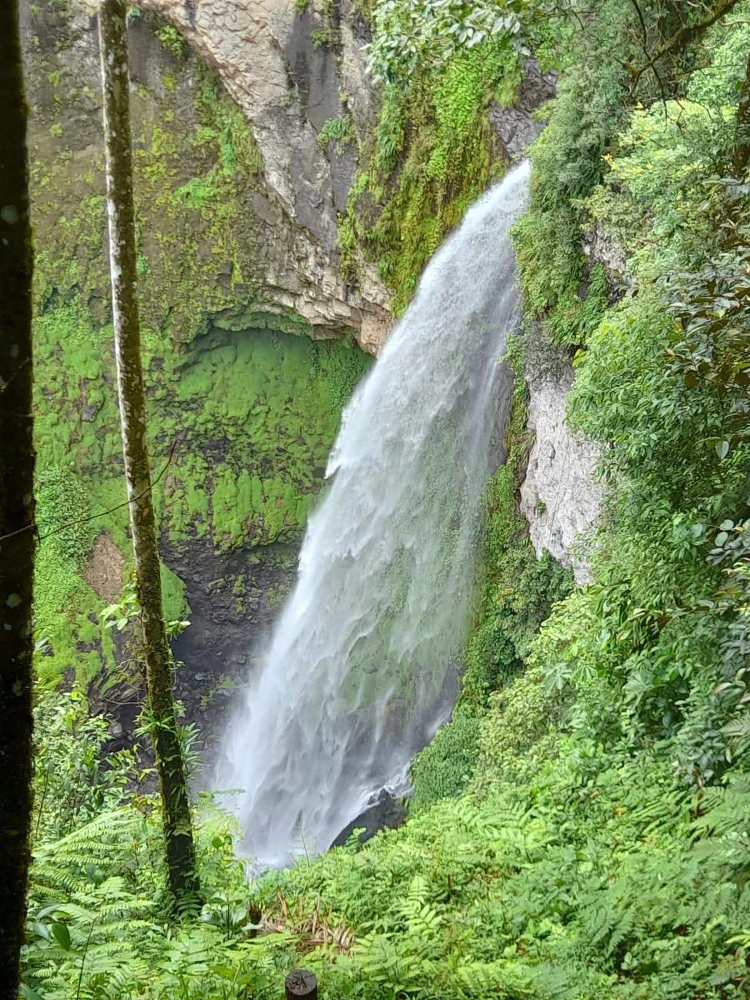
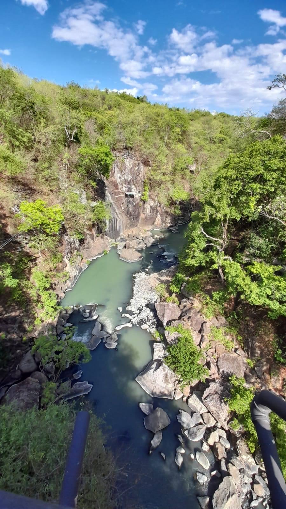
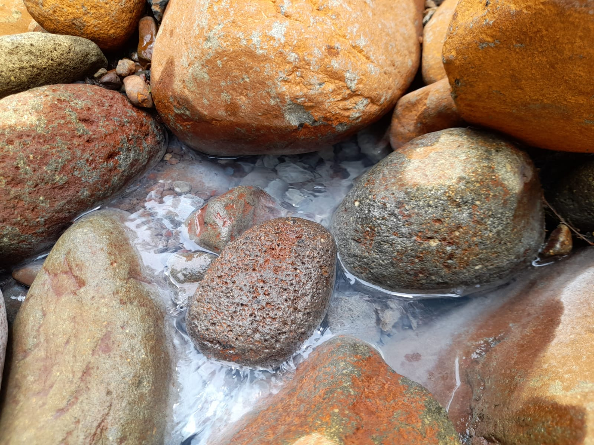

WELCOME
Acerca de nosotros
GeoterRA es una aplicación innovadora diseñada para optimizar la toma de decisiones en proyectos que aprovechan la energía geotérmica en el territorio nacional. Nuestra misión es proporcionar información geológica precisa y validada para inversores y desarrolladores, minimizando riesgos y maximizando la eficiencia en la planificación y ejecución de actividades económicas sostenibles. Con un equipo multidisciplinario de expertos en geología y tecnologías de la información, nos comprometemos a fomentar el uso de energías renovables y contribuir al desarrollo sostenible del país a través de herramientas interactivas y datos actualizados.
Desde su concepción, GeoterRA ha sido impulsada por la necesidad crítica de contar con información especializada y esencial para aquellos que deseen invertir en la geotermia. Utilizando avanzadas tecnologías de visualización y análisis de datos, nuestra plataforma ofrece una vista integral y detallada del potencial geotérmico en diversas regiones. Esto permite a los usuarios realizar una planificación estratégica informada, reduciendo riesgos y aumentando las posibilidades de éxito en sus proyectos. Nos enorgullece ser una herramienta clave en la promoción de una transición energética hacia fuentes más limpias y sostenibles.
Como funciona
GeoterRA comienza con la recolección integral de datos geológicos de diversas fuentes. Expertos realizan estudios de campo para obtener información esencial, mientras que los usuarios contribuyen subiendo fotos y datos geolocalizados a través de nuestra aplicación móvil. Además, integramos datos de bases de datos geológicas existentes para asegurar una recopilación rica y diversa.
GeoterRA proporciona herramientas avanzadas para la planificación y evaluación de proyectos. Los usuarios pueden interactuar con el mapa, buscar y filtrar información geológica específica, y visualizar estructuras en 3D. Un robusto sistema de autenticación garantiza la seguridad de los datos. La plataforma se actualiza regularmente con nuevos datos y permite la contribución de la comunidad, fomentando un entorno colaborativo y siempre actualizado.

Una vez recopilados, los datos pasan por un riguroso proceso de validación y análisis especializado para asegurar su precisión. Estos datos se almacenan en una base de datos SQL, lo que permite un manejo eficiente y estructurado de la información. Utilizando Leaflet y OpenStreetMap, ofrecemos un mapa interactivo personalizado donde los usuarios pueden explorar y visualizar la información geológica detallada.
Contactá con nosotros
Gracias por su interés en GeoterRA. Estamos aquí para ayudarle con cualquier pregunta, comentario o apoyo que pueda necesitar. No dude en comunicarse con nosotros rellenando este formulario: